GIAC 2022 深圳站小记
目录
启程
周末蹭公司的门票参到 GIAC 现场学习了两天，受疫情影响，大会临时从华侨城改到了 40 公里外的龙岗，原定早上出发晚上回来的行程直接改成在酒店住两晚。对离得近的同学来说，改期自然是要比改地点好一些，特别感谢 Shopee Academy 的同事一直帮忙协调解决了很多问题。
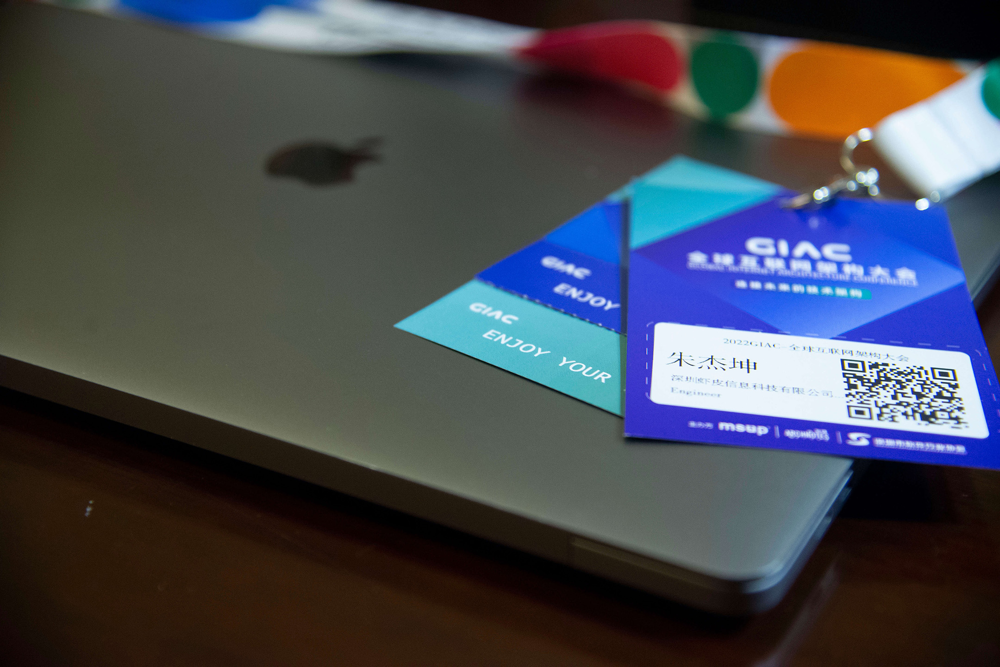
课程规划
GIAC 每天分为上下午场，每场又有 6 个分会场，分别对应不同主题，一个主题下大约有 3-4 场分享，因此想全都到现场听是不可能的。晚上在酒店预先做了点攻略，先把感兴趣的主题圈画出来，再看主题下具体有什么分享。
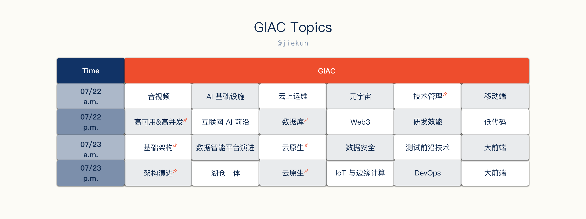
选择听哪场分享影响因素有很多，例如作为后端工程师，我可能对前端、AI、大数据的内容暂时不感兴趣，如果想去听，那么：
- 要花大量时间预热背景知识，在半天时间内几乎不可能；
- 对团队内这个方向的实践不熟悉，不好对比，没有对比就没办法提出学习改进的思路。
另外因为前几周刚刚返厂维修了膝盖，走路全靠拐杖，要在不同会场之间蠕动还很困难，所以尽可能保持每个半天都待在同一个会场，剩余分享可以在会后看回放学习，只少了提问交流的机会。
综合各种因素和限制，最后选择了学习以下的分享，按照自己的理解重新分类，并从中挑选几个话题进行分享：
- Database
- 快手数据总线 KBus 的设计和实践
- 云巢：基于 K8s 的数据库云原生服务平台实践
- 服务治理
- 基于 dubbo-go 构建跨语言的服务治理平台
- 无侵入式多重灰度和全链路压力测试
- Open-source software
- 让开源成为公司技术管理的杠杆
- 运维
- 腾讯游戏的海量 SRE 运维实践
- Kubernetes
- 云原生跨集群统一算力调度在网易的实践
快手 KBus：CDC 解决方案
数据写入 Database、缓存、搜索引擎是很常见的存储方案，在过往的一些项目中，产生数据的一方会独立完成这些操作，先写入某个中间件，再写入某个中间件。引入 Databus（数据总线）之后，产生数据的应用可以专注于完成 Database 的写入，在它的视角里面，数据库写事务成功提交，处理就已经完成了，写入架构可以变成下面这样：
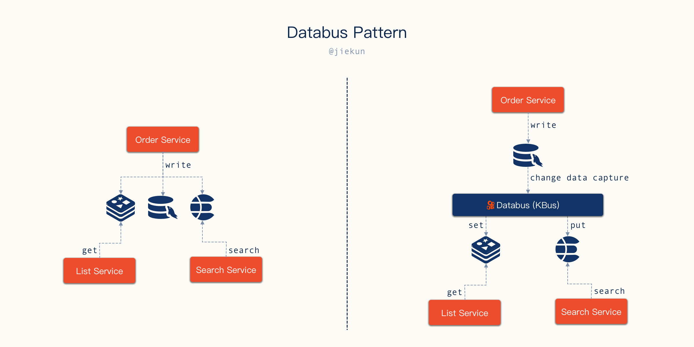
Databus Pattern
在 Shopee Affiliate 团队，同样也有 Databus 的概念。当用户注册后，一条 “注册” 消息会被发送至 Kafka，不同微服务消费到这条消息后对用户进行审核、打标（Tagging）等操作。跟快手 KBus 的不同之处在于，KBus 本质上是一个 CDC 应用，它的消息代表的是数据变更内容；而 Affiliate 团队的 Databus 是用 Kafka 承载的是一个业务事件消息。
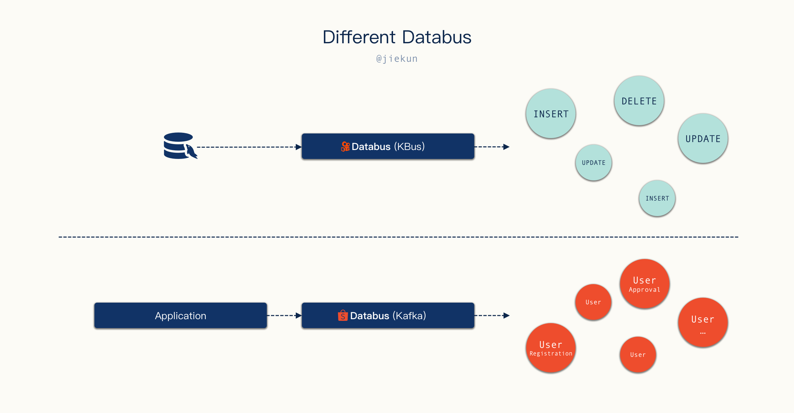
两种类型的 Databus 是否可以合并呢？其实业务事件大多数场景下都是一次 Database 操作的结果，例如用户注册可能就是一条 INSERT 语句，用户审批可能是一条 UPDATE 语句等，Consumer 确实可以通过识别这些 SQL 语句的执行来实现类似功能，但是：
- 如果业务非常复杂，从 100 次
INSERT消息中识别一个事件可能需要筛除掉另外的 99 条INSERT消息。换句话说，SQL 执行的语义必然不如自定义的业务事件语义清晰，简化 Producer 的逻辑即是加重 Consumer 的逻辑； - 业务应用有能力向 Databus 投递复合的数据。例如一个 User 的数据散落在不同表中，我希望借助 Databus 来更新这个 User 的缓存，单靠某句
INSERT或者UPDATE的消息不容易完成，需要联合上下文相关的语句才能构建完整的 User 模型。这种场景在 KBus 的模式下就会比较困难，需要 Consumer 来处理；而如果 Producer 投递的就已经是组装好的数据，那 Consumer 侧就只需要SET操作直接更新缓存即可。
CDC Tool
在业务的角度来看，如果在使用不同的存储中间件，用可靠的 CDC 方案来完成次级存储（Redis、Elasticsearch、Clickhouse）的写入可以提升开发效率，在一些方案设计时，只要体现出业务应用与 Database 的交互，不再关心缓存的写入时机，听起来似乎很诱人。Affiliate 团队当前大部分 Redis 的写入是在业务应用内完成，Elasticsearch 的写入则是利用与 KBus 类似的 CDC 组件来完成。
在确认 KBus 是一个 CDC 平台后，很自然地会将它与我们当前正在使用的 canal 进行比较。下图来自分享老师的 PPT，可以看到 KBus 内部是多个 Server + Kafka 的模型。
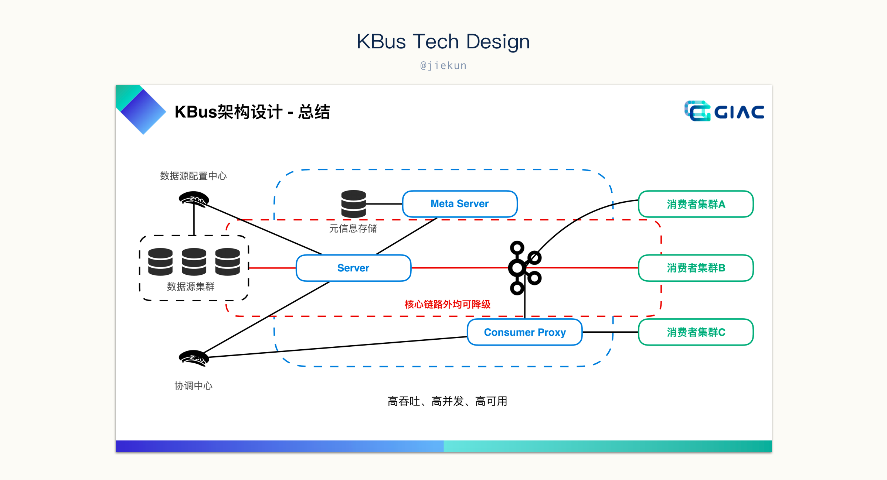
其中，Meta Server 存储元信息，不同 Database 的配置应该是依赖它来存储的，而协调中心自然是分布式系统中的中心化节点，协调不同 Server 的工作。而 Server 就是伪装成 Database 的 Slave，是真正的 CDC worker。
这套设计跟 canal 很像，canal 中没有 Meta Server，取而代之的是一个 MySQL 或配置文件；协调中心则是直接使用了 ZooKeeper，“协调” 工作通过类似于抢占的操作来完成，某个 Server 抢占到了 Database 的使用权，那它就是这个 Database 的 CDC worker。
canal 中 ZooKeeper 同时用于 “协调” 和 “记录位点信息”，KBus 将它们拆到了不同的地方，但不管怎么做，由于 “消息投递至 Kafka” 与 “更新位点（至 ZooKeeper 或 Meta Server）” 不是事务操作，总会出现消息已投递，但未来得及记录进度，Server 就意外不可用的情况，紧接着替代的 Server 就会从历史进度开始获取变更数据信息继续投递。这个问题在 Consumer 视角来看，就是会出现消息重复投递的情况，需要自行实现幂等处理。
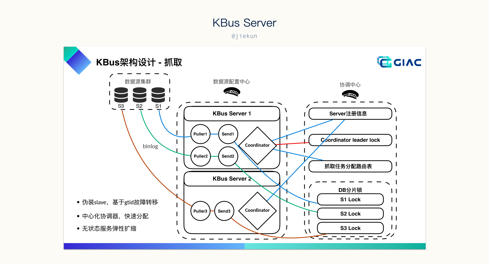
在现场我还提了另一个问题，日常 canal 使用中，我们发现如果单纯依赖 “抢占” 逻辑，当出现新的 Database 需要被 CDC worker 处理时，极有可能出现资源分配不均匀的情况，某个 CDC worker 抢占到了大量 Database 目标，而其他 CDC worker 则没有太多负载。KBus 的解决方案是通过考察落在 Server 上的 Database 数量来尽可能保持均衡，这样做一定程度能缓解倾斜的问题，但是由于不同的 Database 使用情况不同，例如有的 Database 可能写操作非常多，而有的 Database 则很闲，几乎不产生数据变更，那实际上 Server 上的 CPU 使用情况仍然会出现倾斜。当然，这个问题优先级可能比较低，况且 KBus 也已经有根据数量来保持平衡的策略，比完全依赖抢占会改善很多。对 CDC 组件来说，保证消息不丢失是最重要的。
Production-Grade CDC Solution
工具需要不断完善才能变成一个平台，对外提供能力。之前一直好奇正儿八经的 CDC 平台是什么样子的（当然，也是因为过往公司内没有合适的 CDC 平台，不同团队各造轮子），通过这次分享窥探了一下 “别人是怎么做的”，然后发现，痛点在哪里都是痛点，问题在哪里都是问题。
我们在用 canal 的时候觉得它不好用，很多地方都做得像个玩具（例如管理后台的登录态存储在内存中，意味着难以部署在多个机器上做高可用），再看 KBus，核心技术思路几乎是完全一致的，例如元信息存储、DDL 执行期间 Server 切换等的处理方式。然后面对 Server 分配不均匀、重复投递这些问题，canal 没处理好的，KBus 或多或少也有（面对过）类似问题，那为什么要用 KBus 不用六七年前就已经发布了的 canal 呢？
答案跟下一节要讲的开源有一点联系。
我不太相信阿里内部使用工具跟开源出来的项目一样。canal 本身有很多小问题，都不是一个面向企业级业务量的工具应该出现的。自研的工具优势很简单：
- 业务场景明确，设计有针对；
- 从 0 到 1 溯源，各种技术决策的原因可追踪；
- 专职维护，没有二次开发困难。
那开源项目难道就做不到这些了吗？也不见得，Kubernetes、TiDB、Redis 都是开源的，当开源的项目满足不了业务需求，要么提 Issue 和 Pull Request 贡献，要么二次开发或者重新造轮子，这些就是用开源工具的难点，特别是用一个社区不活跃的开源工具。
回到正题，当企业内能孵化出这样的项目，它本身：
- 开发和解决问题是团队的职责；
- 不好用就没人用，没人用就没有对应的成果和绩效。所以只要这个能力一直被需要，它就能一直在改进。
所以在听完分享之后我觉得 KBus 确实是一个使用上能满足企业级业务接入的要求、能运维得当的 CDC 解决方案。在之前，我会想象别人家 Production-Grade 的解决方案能解决我们遇到的（绝大多数）问题，现在改变了主意：原来别家也一样，那 canal 改改也可以。只是比起自己造的轮子，从开源社区白嫖的工具 “改改” 难度大了许多而已。
开源与技术管理
这一场的分享者是 Apache Member 郭炜老师，很可惜老师没有来到现场，改用线上的形式。Slides：HERE。
头一天晚上在酒店的时候，看到这场分享的题目，心里想的是：
- 我有做出来过什么开源（/能在不同团队里使用）的东西吗？
- 如果有的话，那它好推广吗？不好推广的原因是什么？
- 为什么要做开源和推广？
- 我从开源和推广里面收获过什么？
第二天带着杂七杂八的问题来到了分享的会场，因为上一场在其他会场结束得比较晚，导致来到的时候只能蹲在后面的角落。
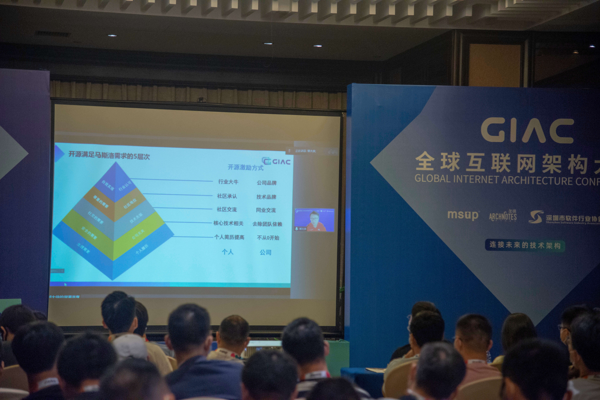
项目推广
对于内部开源，老师提到了一些作为（开源）管理者应该倡导和要避免的要点，仔细一看，有我们一直鼓励的、正在实践的、做失败的、踩过坑不好维护的，各种问题都有。其中，团队内一直都提倡结合实际痛点，落地能解决问题的、团队适用的工具，对产品线内外宣讲也很支持。
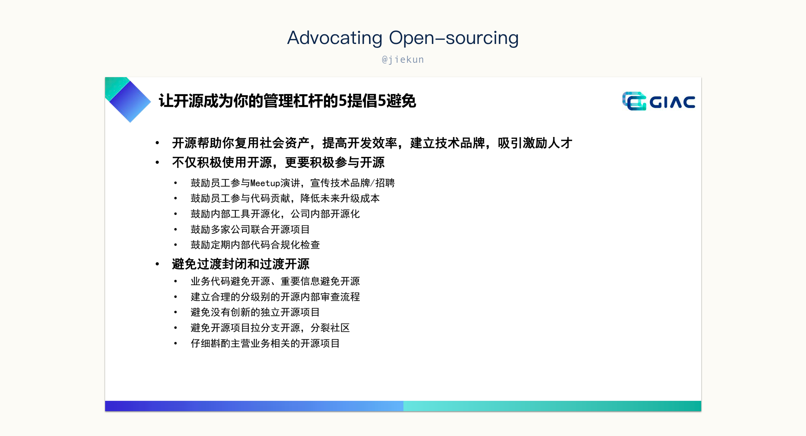
如果能观察一下自己、企业内做失败的工具，问题都很容易总结出来：
- 边界不清晰。什么都想做的项目，基本上都失败了；
- 代码开源。应该推广的是产品而不是代码；
- 开发者寥寥无几。通常只有写下这个工具的一两个人在维护和迭代。
对于推广的工具，大部分的使用者都不是它的开发者，所以他们还不是社区的一部分，这就是所谓的 “代码开源”。那使用者没这么多时间去开发，在企业内似乎也很正常？其实没关系，开源社区的参与并不只是代码上的参与，传统的需求流程和老师提出来的下一代的开发形式差别就在这里。
想一下，你推广出去的开源工具，有听到用户的声音了吗？你的用户在使用你的代码，还是有 feedback 给你，或者甚至提方案、提 Pull Request？那接到这些信息的时候，你或者社区内的其他人有关注吗？所有的这些问题对应的就是：
- 谁在参与这个社区；
- 这个社区的活跃程度。
提升这方面的要点其实就一句话：让更多的人参与进来。不光是对开源项目，任何想推广的内部项目也都可以这样处理。
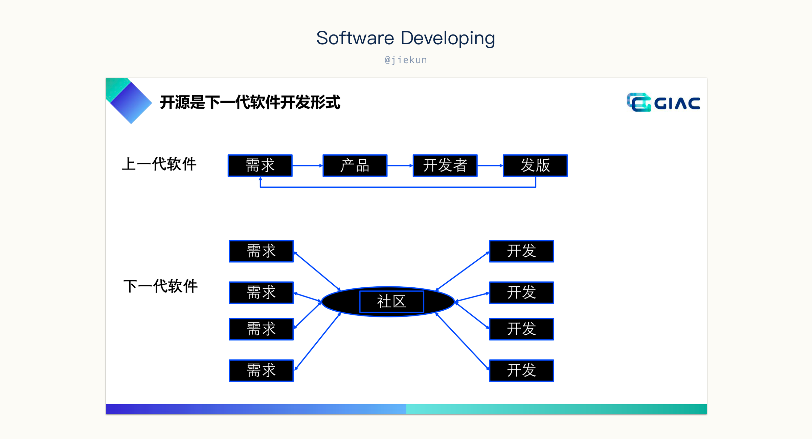
开源收益
参与开源有两条不同的路径，一是将新的轮子推广出去，二是参与到已有开源项目的开发中。在企业内想推广一些新工具和平台往往都是不容易的（强制推行的除外），因为业务团队大都有正儿八经的业务项目需要维护，那为什么要做额外的工具和推广呢？当你决定要把某个项目共享出去，可能是基于：
- 共享轮子；
- 内部开源走向外部开源；
- 产生技术影响力；
- 打造商业模式。
但是能实现这些其实都是很难的，更多的项目还没走出部门内就已经死了。
而参与到开源项目，对公司和个人都有一些来得更直接的收益。其次就像某人所说的，“The best programs are the ones written when the programmer is supposed to be working on something else.”。
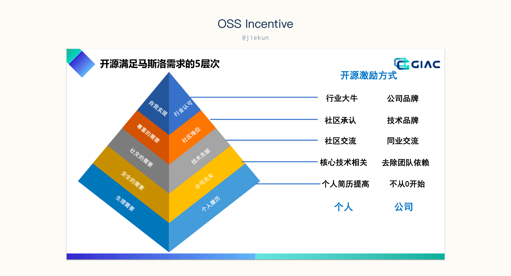
最后，开源项目不代表免费，也不代表不盈利，受限于篇幅，这里推荐阅读一下 slides 中 “外部开源要做商业么？” 的部分，企业、项目的可持续发展离不开社区的目标。
写在最后
文章大部分只是听分享过程中闪过的一些想法和随手的笔录，有的思考和观点并不严谨，也不一定正确。
在听分享的过程中，发现最没有意义的就是介绍一个很庞大的系统，模块非常多，功能非常全，几乎我能想到的功能它都有。不出 10 页 slides 一定有超多框框箭头的架构图，有降级熔断模块、告警监控模块、管理模块、调度模块等等，如果有哪个系统能把这么多的模块都做得很完善，那自然是很优秀的，但可惜没有能借鉴的地方，因为大家都知道要去做，只是受限于 ROI，未必需要都做出来。这样的分享更像是在展示一款产品，说，你来用吧。抱歉，我其实不是来听这些的。
以及，2 天听的分享时间上满满当当，匆忙间也没办法记录下太多的内容。后续等录播上线之后，还有其他老师的分享需要看录播完善一下思考才能写进来。
碎碎念
原本以为临时改了这么远的地点，参会的人会少很多，毕竟也提供了线上直播，但是其实周五当天人还是挺多的，以致于换会场的时候发现没有位置坐了，拄着拐杖听了大半个小时。周六反而人少了一些，可能大家都觉得周五外出摸一天鱼更有利于吸收知识。
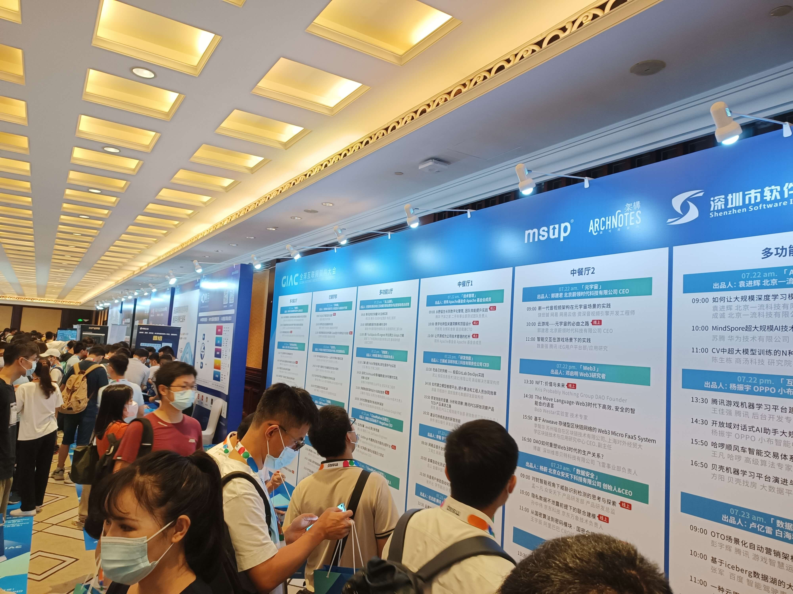
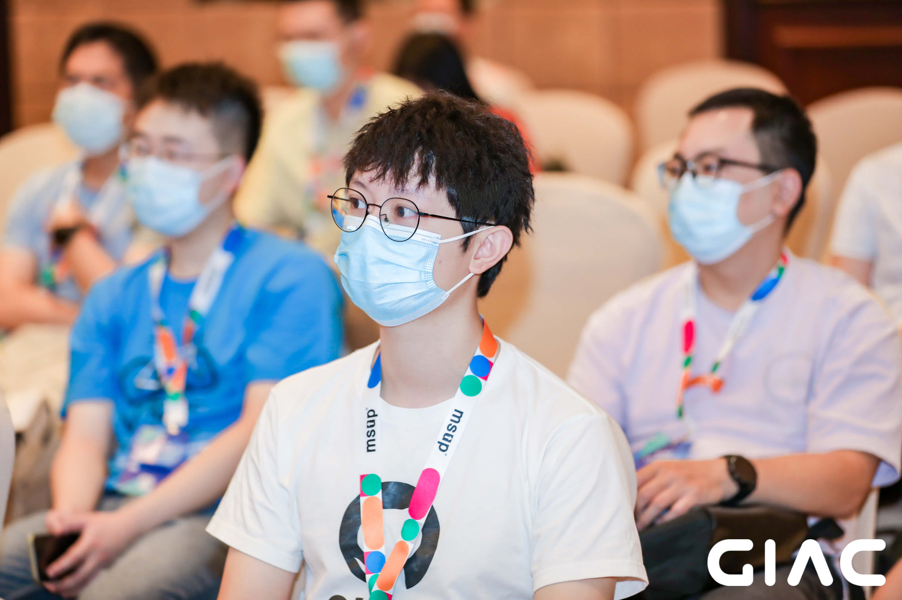
早上急急忙忙起来只吃了个鸡蛋，喝了豆浆，偷了根香蕉就往会场赶，倒是中午的时候听完慢悠悠去用餐比较舒服，但是去晚了就剩养生食品，想着晚上要出去吃，中午就随便糊弄一下也行。
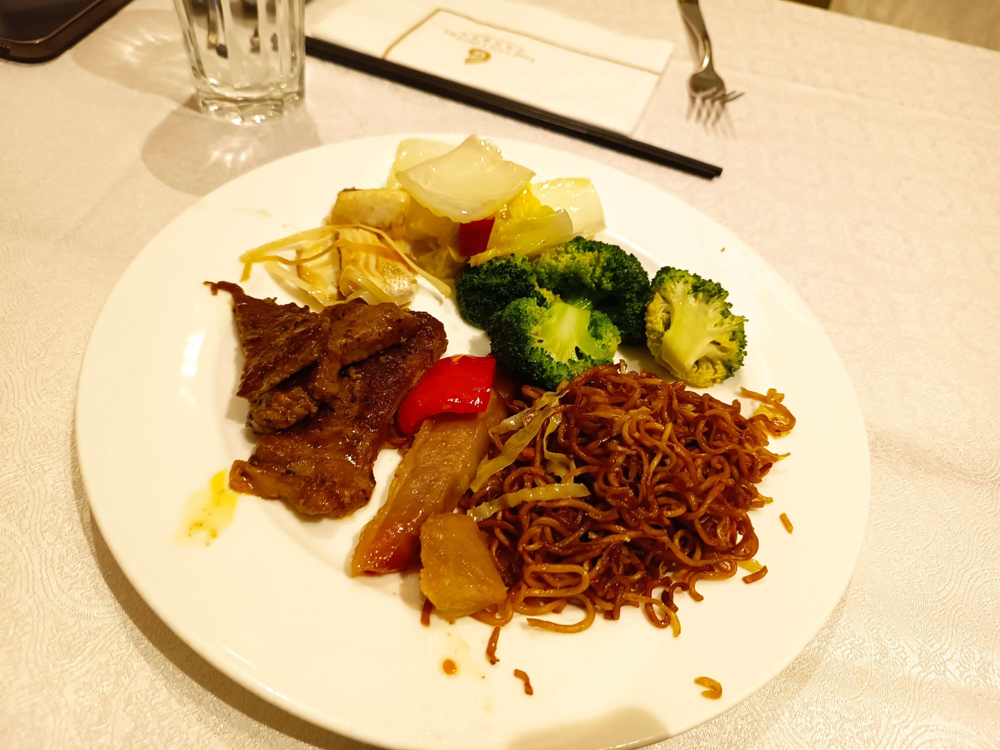
晚上跟朋友去吃了一顿自助餐，改善一下开会的体验，毕竟坐一整天确实挺累的，不过如果有下一次的话，那大概也还是会去，咱毕竟是去上课不是来接雨水的。
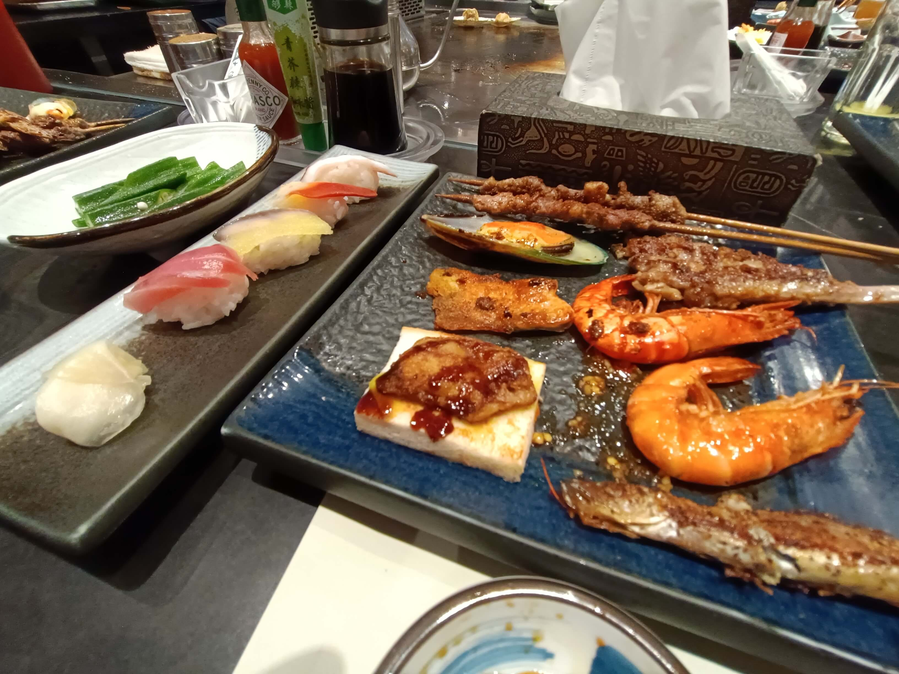